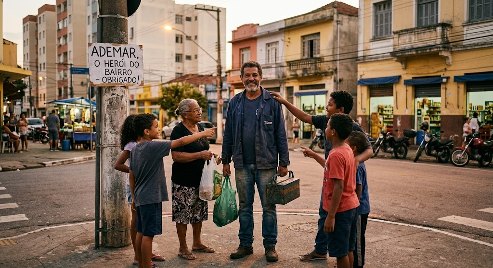

Ademar depois dessa vivencia maluca depois de cada luta e batalha travada, e depois de conseguir salvar o seu bairro, ele foi reconhecido como o heroi. E com isso fizeram uma grande festa para ele em homenagem pelo oque ele fez pelo bairro, e todos do bairro fizeram uma grande fila pra agrecer a ele. por salvar tudo e todos no bairro, ate a velha rabugenta que arrumava briga com todo mundo foi la dar os parabens e agradecer.
E com isso Ademar resolveu o problema do bairro e saiu de la se achando o prorio Batman. No dia seguinte os moradores agradecidos ja o chamavam de heroi do bairro. E com isso ele ja ganhou um novo emprego, O protetor oficial do bairro.
Agora sua maior missao era combater cofusoes, resgatar gatos em cima de arvores e ate

Voltar para o inicio